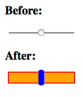

Me
-
jQuery UI Team Member

-
Liquid Web

-
Lansing, MI

jQuery UI Widgets vs. HTML5
Overlapping Functionality
<div class="box">
<h6>input[type="date"] vs. Datepicker</h6>
<input type="date">
<input id="datepicker-main">
</div>
<div class="box">
<h6>input[type="number"] vs. Spinner</h6>
<input type="number">
<input id="spinner-main">
</div>
<div class="box">
<h6>input[type="range"] vs. Slider</h6>
<div class="left">
<input type="range">
</div>
<div class="right">
<div id="slider-main"></div>
</div>
</div>
<div class="box">
<h6>[datalist] vs. Autocomplete</h6>
<input list="datalist-main">
<datalist id="datalist-main">
<option>Baboon</option>
<option>Badger</option>
<option>Barnacle</option>
<option>Bat</option>
<option>Bear</option>
<option>Beetle</option>
<option>Bird</option>
<option>Buffalo</option>
<option>Butterfly</option>
</datalist>
<input id="autocomplete-main">
</div>
<div class="box">
<h6>progress vs. Progressbar</h6>
<progress></progress>
<div id="progressbar-main"></div>
</div>
<script>
$('#datepicker-main').datepicker();
$('#spinner-main').spinner();
$('#slider-main').slider();
$('#autocomplete-main').autocomplete({
source: ['Baboon', 'Badger', 'Barnacle', 'Bat', 'Bear', 'Beetle', 'Bird', 'Buffalo', 'Butterfly']
});
$('#progressbar-main').progressbar({ value: false });
</script>
- input[type=date] vs. datepicker
- input[type=number] vs. spinner
- input[type=range] vs. slider
- <datalist> vs. autocomplete
- <progress> vs. progressbar
How did we get here?
Limited Number of Form Controls

Form Controls
<input type="text"> <input type="password">
<input type="radio"> <input type="checkbox">
<input type="file"> <input type="hidden">
<input type="button"> <input type="image">
<input type="reset"> <input type="submit">
<select><option>option</option></select>
<textarea></textarea>
We figured out JavaScript

We made better UIs
<input type="text" id="datepicker-first">
<script>
$( "#datepicker-first" ).datepicker();
</script>
They got standardized


Datepickers
<input type="date">
<input type="text" id="datepicker-1">
<script>
$( "#datepicker-1" ).datepicker();
</script>
Why use input[type=date]?
<input type="date">
min / max / step attributes
<form>
<input type="date" id="date-1"
min="2013-03-03" max="2013-03-20" step="2">
</form>
Hooks into the constraint validation API
<form>
<input type="date" id="date-2">
<button type="submit">Submit</button>
</form>
<script>
var date = document.getElementById( "date-2" );
date.addEventListener( "change", function() {
if ( /7/.test( date.value ) ) {
date.setCustomValidity( "NO SEVENS!" );
} else {
date.setCustomValidity( "" );
}
});
</script>
<datalist> Integration
<input type="date" id="date-3" list="dates-3">
<datalist id="dates-3">
<option>2013-01-01</option>
<option>2013-10-31</option>
<option>2013-12-25</option>
</datalist>
The user agent can optimize the means of input.
iOS

Chrome for Android

Limitations of input[type=date]
- Lack of style-ability
- Lack of customizability
- Lack of extensibility
- Browser Support
Min and max dates
<input type="text" id="date-min-max">
<script>
$( "#date-min-max" ).datepicker({
minDate: new Date( 2013, 01, 01 ),
maxDate: new Date( 2013, 01, 10 )
});
</script>
Restrict Available Days
<input type="text" id="datepicker-3">
<script>
$( "#datepicker-3" ).datepicker({
beforeShowDay: $.datepicker.noWeekends
});
</script>
Themeable
<input type="text" id="themeable">
<script>
$( "#themeable" ).datepicker();
</script>
Show Multiple Months
<input type="text" id="datepicker-2">
<script>
$( "#datepicker-2" ).datepicker({
numberOfMonths: 3
});
</script>
Animate in / out
<input type="text" id="datepicker-4">
<script>
$( "#datepicker-4" ).datepicker({
showAnim: "fade",
duration: 500
});
</script>
Programmatic Control
<input type="text" id="datepicker-5">
<button id="show-5">Show</button>
<button id="hide-5">Hide</button>
<script>
$( "#datepicker-5" ).datepicker();
$( "#show-5" ).on( "click", function() {
$( "#datepicker-5" ).datepicker( "show" );
});
$( "#hide-5" ).on( "click", function() {
$( "#datepicker-5" ).datepicker( "hide" );
});
</script>
Just HTML on the DOM
<!-- Simplified example of markup -->
<div class="ui-datepicker">
<div class="ui-datepicker-header">
<a class="ui-datepicker-prev"></a>
<a class="ui-datepicker-next"></a>
<div class="ui-datepicker-title"></div>
</div>
<table class="ui-datepicker-calendar">
<!-- etc -->
</table>
</div>
Just HTML on the DOM
<div id="inline-datepicker"></div>
<script>
$('#inline-datepicker').datepicker();
</script>
Comparison
-
input[type=date]
- Easy
- Dependency free
- Ties into other native features
- Mobile optimized input
-
jQuery UI's datepicker
- Customizable
- Extensible
- Themeable
- More Functionality
- Browser Support (IE7+)
Can we get the best of both worlds?
The Problem
<input type="date" id="both-pickers">
<script>
$( "#both-pickers" ).datepicker();
</script>
Shadow DOM to the Rescue?

Customizing Pseudo-Elements
<style>
#date-4::-webkit-inner-spin-button {}
#date-4::-webkit-calendar-picker-indicator {}
</style>
<input type="date" id="date-4">
Getting it to Work
<style>
#date-5::-webkit-inner-spin-button,
#date-5::-webkit-calendar-picker-indicator {
display: none;
}
</style>
<input type="date" id="date-5">
<script>
$( "#date-5" ).datepicker({
dateFormat: 'yy-mm-dd'
});
</script>
Available Pseudo-Elements
-
WebKit
- ::-webkit-datetime-edit
- ::-webkit-datetime-edit-fields-wrapper
- ::-webkit-datetime-edit-text
- ::-webkit-datetime-edit-month-field
- ::-webkit-datetime-edit-day-field
- ::-webkit-datetime-edit-year-field
- ::-webkit-inner-spin-button
- ::-webkit-calendar-picker-indicator
-
Presto
-
Trident / Gecko
- No input[type="date"] support
Presto

iOS

Chrome for Android

Can we get the best of both worlds?
No
Using datepicker as a polyfill
<input type="text" id="date">
<script>
if ( Modernizr.inputtypes.date ) {
$( "#date" ).attr( "type", "date" );
} else {
$( "#date" ).datepicker({
dateFormat: 'yy-mm-dd'
});
}
</script>
Number Pickers
<input type="number">
<input type="text" id="spinner">
<script>
$( "#spinner" ).spinner();
</script>
Why use input[type=number]?
<input type="number">
Chrome for Android
<input type="number">

iOS 6
<input type="number">
iOS 6
<input type="number" pattern="[0-9]*">

Opera Mobile
<input type="number" min="2" max="8" step="2">

min / max / step attributes
<input type="number" id="number-1"
min="0" max="10" step="2">
Hooks into the constraint validation API
<form>
<input type="number" id="number-2" min="0"
max="10" step="2">
<button type="submit">Submit</button>
</form>
<datalist> Integration
<input type="number" id="number-3" list="numbers-3">
<datalist id="numbers-3">
<option>40</option>
<option>41</option>
<option>42</option>
</datalist>
Limitations of input[type=number]
- Lack of style-ability
- Lack of customizability
- Lack of extensibility
- Browser Support
min / max / step attributes
<input type="text" id="spinner-attrs"
min="2" max="10" step="2">
<script>
$( "#spinner-attrs" ).spinner();
</script>
Themeable
<input type="text" id="spinner-theme">
<script>
$( "#spinner-theme" ).spinner();
</script>
Paging
<input type="text" id="spinner-1">
<script>
$( "#spinner-1" ).spinner({
page: 10
});
</script>
Currency + i18n
<input type="text" id="spinner-2">
<script>
$( "#spinner-2" ).spinner({
min: 25,
max: 2500,
step: 25,
numberFormat: "C",
culture: "en"
});
</script>
Time Picker
$.widget( "ui.timespinner", $.ui.spinner, {
options: {
// seconds
step: 60 * 1000,
// hours
page: 60
},
_parse: function( value ) {
if ( typeof value === "string" ) {
// already a timestamp
if ( Number( value ) == value ) {
return Number( value );
}
return +Globalize.parseDate( value );
}
return value;
},
_format: function( value ) {
return Globalize.format( new Date(value), "t" );
}
});
Time Picker Example
<input type="text" id="spinner-4"
value="08:00 PM">
<script>
Globalize.culture( "en" );
$( "#spinner-4" ).timespinner();
</script>
Can we get the best of both worlds?
Both Number Spinners?
<input type="number" id="spinner-both">
<script>
$( "#spinner-both" ).spinner();
</script>
Shadow DOM to the Rescue!
<input type="number" id="number-4">
<style>
#number-4::-webkit-outer-spin-button,
#number-4::-webkit-inner-spin-button {
display: none;
}
</style>
<script>
$( "#number-4" ).spinner();
</script>
Can we get the best of both worlds?
Not really...
Using spinner as a polyfill
<input type="text" id="number-picker">
<script>
if ( Modernizr.inputtypes.number ) {
$( "#number-picker" ).attr( "type", "number" );
} else {
$( "#number-picker" ).spinner();
}
</script>
Range Pickers
<input type="range">
<div id="slider"></div>
<script>
$( "#slider" ).slider();
</script>
iOS 6
<input type="range">
Chrome for Android
<input type="range">

IE10
<input type="range">

min / max / step attributes
<input type="range" id="range-1"
min="0" max="100" step="20" value="0">
<output>0</output>
<script>
$( "#range-1" ).on( "change", function() {
$( this ).next( "output" )
.val( $( this ).val() );
});
</script>
Datalist Integration
<input type="range" list="range-options">
<datalist id="range-options">
<option value="10"></option>
<option value="40"></option>
<option value="70"></option>
</datalist>
Datalists in IE10

Pseudo-Elements
-
Gecko
- ::-moz-range-track
- ::-moz-range-thumb
-
Trident
- ::-ms-fill-lower
- ::-ms-fill-upper
- ::-ms-thumb
- ::-ms-ticks-after
- ::-ms-ticks-before
- ::-ms-track
- ::-ms-tooltip
-
WebKit
- ::-webkit-slider-runnable-track
- ::-webkit-slider-thumb
Pseudo-Elements



min / max / step
<div id="slider-attrs"></div>
<script>
$( "#slider-attrs" ).slider({
min: 0,
max: 100,
step: 20
});
</script>
Themeable
<div id="slider-theme"></div>
<script>
$( "#slider-theme" ).slider();
</script>
Multiple Handles
<div id="slider-3"></div>
<script>
$( "#slider-3" ).slider({
values: [10, 40, 70]
});
</script>
Ranges
<div id="slider-4"></div>
<script>
$( "#slider-4" ).slider({
range: true,
min: 0,
max: 100,
values: [20, 80]
});
</script>
Animation
<div id="slider-5"></div>
<script>
$( "#slider-5" ).slider({
animate: true
});
</script>
To Summarize...
Native Features
- Easy
- Dependency Free
- User Agent Optimized Input
- Hooks into Other Native Functionality
- Lack of browser support
- Not styleable / themeable
- Not customizable
- Not extensible
UI Widgets vs. Native Elements
You have to pick one or the other.
Solutions?
<input type="date" ui="false">
Future Solutions
-
Add a new shadow root to a
<input>
Future Solutions
- Custom elements are part of web components specification.
- Eventually, custom form elements will be possible.
- Not part of the specification yet.
stepUp() / stepDown()
<input type="number" id="number-step" value="1">
<script>
document.getElementById( "number-step" ).stepUp( 3 );
</script>
Range Orientation
<input type="range" id="range-orientation">
<style>
#range-orientation {
/* -webkit-appearance: slider-vertical; */
width: 10px;
height: 100px;
}
</style>
Sane Orientation API
<div id="slider-2"></div>
<script>
$( "#slider-2" ).slider({
orientation: "vertical"
});
</script>